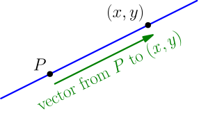
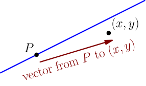
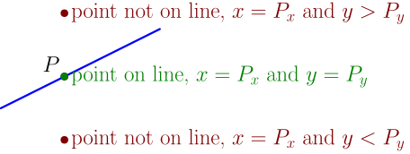

Equation of Line from Known Slope and Point¶
Let's find the equation of a line with slope $2$ going through the point $(3,5)$. The equation is $y = 2x+h$, where $h$ is an unknown number. The point $(3,5)$ must be on the line, so it must satisfy the equation of the line: $$ 5 = 2 \cdot 3 + h $$ From here we can solve $h = -1$, so the equation is $y = 2x-1$.
While this method works, it involves solving an equation, although the equation is very simple. We can improve on this a little bit by doing the above work more generally, and then just using the results later.
Let's find the equation of a line with slope $s$ going through the point $P=(P_x,P_y)$. The equation is $y = sx+h$, where $h$ is an unknown number. The point $P$ must be on the line, so it must satisfy the equation of the line: $$ \begin{align} P_y &= sP_x + h \\ P_y - sP_x &= h \end{align} $$ We can plug this into the line equation: $$ \begin{align} y &= sx+h \\ y &= sx+P_y-sP_x \\ y-P_y &= sx-sP_x \\ y-P_y &= s(x-P_x) \end{align} $$
The equation of a line with slope $s$ going through point $P$ is $$ y-P_y = s(x-P_x). $$
Let me show a different way to think about this formula. From the slope line equation derivation, we know that a nonzero vector $\vec d$ goes in the direction of the line if and only if $\frac{d_y}{d_x} = s$. We also see that a point $(x,y)$ is on the line if and only if the vector from $P$ to $(x,y)$ is in the direction of the line.


The vector from $P$ to $(x,y)$ is $(x-P_x)\I + (y-P_y)\J$. By combining these results, we see that $(x,y)$ is on the line if and only if $$ \frac{y-P_y}{x-P_x} = s, $$ which can be rewritten as $$ y - P_y = s(x - P_x). $$ The above derivation doesn't work for $x = P_x$, because then it divides by zero. In that case, the right side of the resulting equation is zero, and so the equation becomes just $y = P_y$, which is indeed true if and only if $P$ is a point on the line (the line isn't vertical, because it has a slope).
